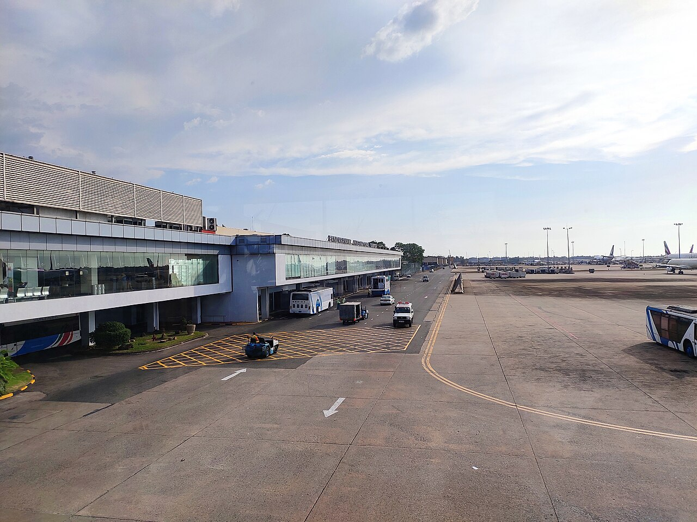
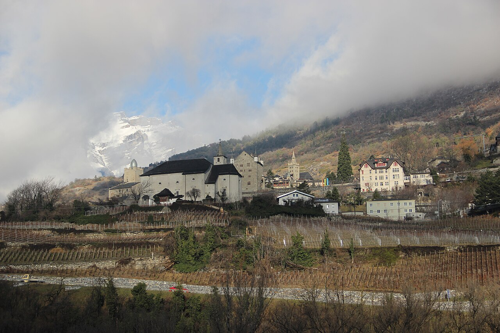
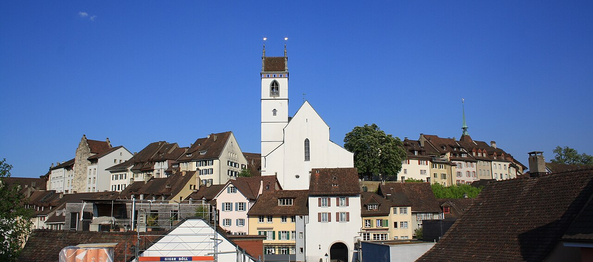
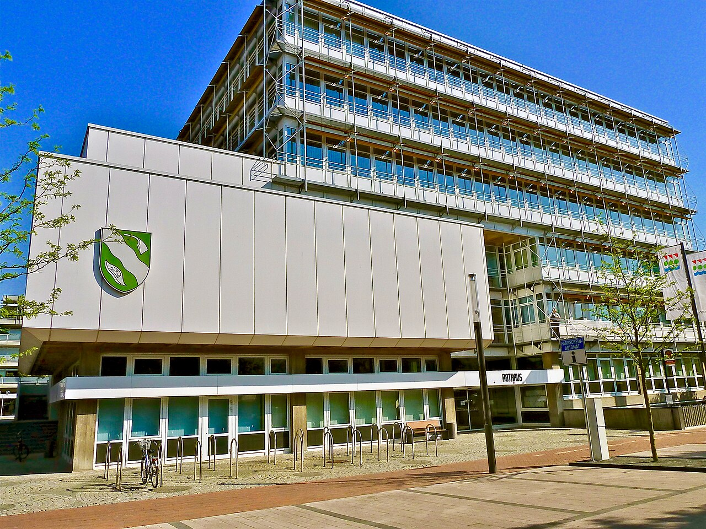
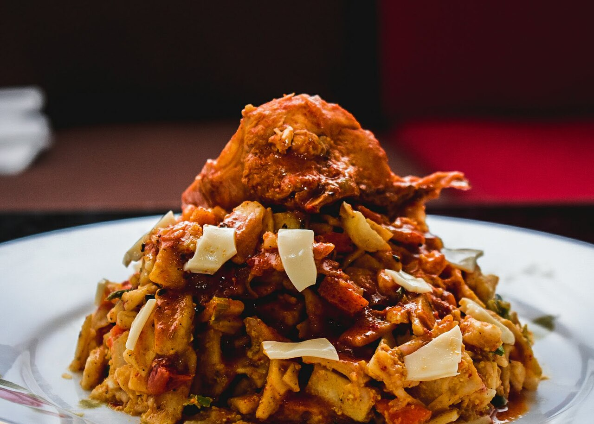

Foto: 18quirl08 / Wikimedia Commons, CC BY-SA 4.0
Nachrichten
Bundestagsdrucksache: 14 Abschiebungen nach Sri Lanka im ersten Halbjahr 2026
Foto: Jörg Braukmann / Wikimedia Commons, CC BY-SA 4.0

Nachrichten
Bundesverwaltungsgericht hält nach Regierungswechsel in Sri Lanka an Asylpraxis fest
Foto: Hadi / Wikimedia Commons, CC BY-SA 4.0

Nachrichten
Sri Lanka erlässt Reisenden aus Deutschland, Österreich und der Schweiz die Visagebühr
Foto: ANKAN / Wikimedia Commons, CC BY-SA 4.0


Foto: Bobinson / Wikimedia Commons, CC BY-SA 4.0
Diese Woche
Alle Termine und KinosIm Kino
Im Kino · Deutschland
„Scene“
11 Kinos
Berlin, Bremen, Chemnitz, Dortmund, Düsseldorf und 6 weitere Städte

Foto: Sriram Narasimhan Silverscreen Media Inc. (https://silverscreen.in) / Wikimedia Commons, CC BY-SA 3.0
Kino
„Sardar 2“ mit Karthi: Deutscher Kinostart war für den 10. September geführt
Bild: Archiv tamil.de
Kino
Kanguva – Ein tamilisches Kino-Highlight ab 14. November in Deutschland

Bild: Archiv tamil.de
Kino
Von Deutschland nach Tamil Nadu: Prashath Lokeshwarans Debüt in Rathamaarey
Termine
-
Deepavali-Feier des Düsseldorf Tamil Sangam
Düsseldorf · Düsseldorf Tamil Sangam
Eine Woche nach Deepavali lädt der Verein zu seiner eigenen Feier ein.
-
Diwali in Basel
Aula Lysbüchel, Basel · Basel Tamil Sangam
Der Basel Tamil Sangam lädt Familien zur Diwali-Feier in die Aula Lysbüchel ein. Mitglieder erhalten Tickets günstiger.
Community
Alle Beiträge
Foto: Rainer Halama / Wikimedia Commons, CC BY-SA 4.0

Foto: Roland zh / Wikimedia Commons, CC BY-SA 3.0

Foto: Björrn Sothmann / Wikimedia Commons, CC BY-SA 4.0

Foto: Lutz Fischer / Wikimedia Commons, CC BY-SA 4.0

Foto: Ewe vonDetten / Wikimedia Commons, CC BY-SA 4.0
Küche

Foto: KARTY JazZ / Wikimedia Commons, CC BY-SA 4.0

Foto: Dan arndt / Wikimedia Commons, CC BY-SA 4.0

Foto: Janice99999999999 / Wikimedia Commons, CC BY-SA 4.0

Küche
Payasam
Bild: Archiv tamil.de
Weitere Geschichten

Foto: D Neethidoss / Wikimedia Commons, CC BY-SA 4.0

Foto: Vincenzo.togni / Wikimedia Commons, CC BY-SA 4.0
Sport
Ranjan Neelakandan: Schweizer Talent mit tamilischen Wurzeln kehrt nach Yverdon zurück

Foto: DXR / Wikimedia Commons, CC BY-SA 4.0
Events
Frankfurt, Duisburg, Dortmund: Drei tamilische Straßenfeste für 2026 angekündigt

Foto: Jonathan Freundlich / Wikimedia Commons, CC BY-SA 3.0
Kultur